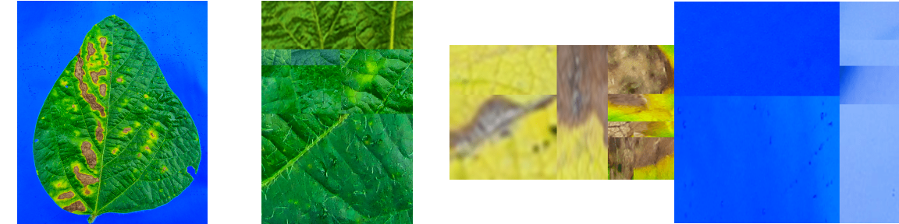
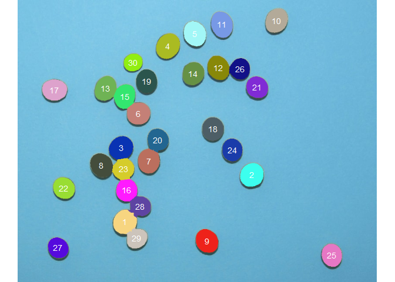

pliman (plant image analysis) is designed to analyze plant images, especially related to leaf analysis. You provide color palettes, tell pliman what each one represents, and it takes care of the details. Image indexes can also be used to segment images. The package will help you to:
- Measure leaf area with
leaf_area() - Measure disease severity with
symptomatic_area() - Count the number of lesions with
count_lesions() - Count objects in an image with
count_objects() - Get the RGB values for each object in an image with
objects_rgb() - Get object measures with
get_measures() - Plot object measures with
plot_measures()
pliman also provides useful functions for operation, transformation, and segmentation of images. Please, visit the Examples page in pliman website for a detailed documentation of each function.
Installation
The development version of pliman can be installed from GitHub with:
devtools::install_github("TiagoOlivoto/pliman")
# To build the HTML vignette use
devtools::install_github("TiagoOlivoto/pliman", build_vignettes = TRUE)Note: If you are a Windows user, you should also first download and install the latest version of Rtools.
Disease severity
library(pliman)
# |========================================================|
# | Tools for Plant Image Analysis (pliman 0.2.0) |
# | Author: Tiago Olivoto |
# | Type 'vignette('pliman_start')' for a short tutorial |
# | Visit 'https://bit.ly/3eL0dF3' for a complete tutorial |
# |========================================================|
img <- image_import(image_pliman("sev_leaf.jpg"))
healthy <- image_import(image_pliman("sev_healthy.jpg"))
symptoms <- image_import(image_pliman("sev_sympt.jpg"))
background <- image_import(image_pliman("sev_back.jpg"))
image_combine(img, healthy, symptoms, background, ncol = 4)
symptomatic_area(img = img,
img_healthy = healthy,
img_symptoms = symptoms,
img_background = background,
show_image = TRUE)
# healthy symptomatic
# 1 89.26272 10.73728Count objects
The function count_objects() can be used to count the objects such as leaves, grains, pods, pollen in an image. In the following example, we will count the number of soybean grains of an image with 30 grains.
img <- image_import(image_pliman("soybean_touch.jpg"))
image_show(img)
count_objects(img, marker = "text")
#
# --------------------------------------------
# Number of objects: 30
# --------------------------------------------
# statistics area perimeter
# min 1366.0000 117.000000
# mean 2057.3667 146.600000
# max 2445.0000 158.000000
# sd 230.5574 8.406073
# sum 61721.0000 4398.000000pliman takes the advantage of several powerful functions from EBImage package. Thanks to Andrzej Oleś and collaborators for the impressive job done with EBImage!
Getting help
If you encounter a clear bug, please file a minimal reproducible example on github
Suggestions and criticisms to improve the quality and usability of the package are welcome!
Code of Conduct
Please note that the pliman project is released with a Contributor Code of Conduct. By contributing to this project, you agree to abide by its terms.